By: AY1920S1-CS2103T-W12-3 Since: SEPT 2019 Licence: MIT
- 1. Introduction
- 2. Quick Start
- 3. Features
- 4. Commands
- 4.1. Logging Income :
in - 4.2. Logging Expense :
out - 4.3. Setting a Budget :
set - 4.4. Splitting a Bill with Friends :
split - 4.5. Receiving Money from a Friend :
receive - 4.6. Projecting Future Balance and Budgets :
project - 4.7. Display a Projection Graph:
display - 4.8. Switching Tabs :
view - 4.9. Deleting Finance :
delete - 4.10. Updating Finance :
update - 4.11. Sorting Transactions :
sort - 4.12. Filtering Transactions :
filter - 4.13. Undoing the Last Command :
undo - 4.14. Redoing the Last Command :
redo - 4.15. Clearing All Entries :
clear - 4.16. Listing All Entries :
list - 4.17. Viewing Help :
help - 4.18. Exiting the Application :
exit - 4.19. Saving the Data
- 4.1. Logging Income :
- 5. FAQ
- 6. Command Summary
1. Introduction
PalPay is for those who prefer to use a desktop app for managing personal finances. More importantly, PalPay is optimized for those who prefer to work with a Command Line Interface (CLI) while still having the benefits of a Graphical User Interface (GUI). If you can type fast, PalPay can get your finance management tasks done faster than traditional GUI apps.
This User Guide is written for the users of PalPay as an introductory document of the application. You are strongly encouraged to read this document before using the application to enjoy the full functionality of the application. Ready to start your journey to financial freedom? Jump to Section 2, “Quick Start” to get started. Enjoy!
2. Quick Start
-
Ensure you have Java
11or above installed in your Computer. -
Download the latest
PalPay.jarhere. -
Copy the file to the folder you want to use as the home folder for your finance manager.
-
Double-click the file to start the app. The GUI should appear within a few seconds.
-
Type your command in the command box and press Enter to execute it.
Example: Typinghelpand pressing Enter will open the help window. -
Some example commands you can try:
-
view transaction: shows list of your transactions. -
in $/100 n/mother d/31102019 c/allowance: adds an income to your personal finance of 100 dollars with the category mother and the description allowance. -
out $/3 n/pie d/19112019 c/food: adds an expenditure to your personal finance of 3 dollars with the category food and the description pie. -
exit: exits the app
-
-
Refer to Section 4, “Commands” for details of each command.
3. Features
3.1. Transaction
The Transaction feature represents the bread and butter logging of incomes and expenditures. PalPay will tabulate and display the overall balance to give users a better insight on their spending and saving habits.
The Transactions are split into:
-
in: income -
out: expenditure
These transactions requires the mandatory AMOUNT, DATE and DESCRIPTION fields to be filled. Additionally, The transactions can take in one or more CATEGORY tags.
3.2. Budget
3.3. Ledger
The Ledger feature allows you to track outstanding balances when you split a bill with your friends and when they pay you back.
Ledger commands consist of:
-
split: split a bill between friends -
receive: log a single payment from 1 friend
3.4. Projection
By using the Projections feature, you can project your:
-
Account Balance
-
Budget Deficits / Surpluses
These projections are cast upon a specified DATE, and optionally, a specified CATEGORY. Upon casting a
projection, it is automatically stored and thereafter accessible through the Projection tab via the view
command (see View).
4. Commands
Command Format :
-
Words in
UPPER_CASEare the parameters to be supplied by the user.
Example: Forin $/AMOUNT n/ITEM d/DATE,AMOUNT,ITEMandDATEare parameters which can be used asin $/300 n/concert d/19112019. -
Items in square brackets are optional.
Example:n/ITEM [c/CATEGORY]can be used asn/coke c/drinksor asn/coke. -
Items with
… after them can be used multiple times including zero times.
Example:[n/NAME]…can be used asn/Amy,n/Amy n/Bettyetc. -
Parameters can be in any order.
Example: If the command specifies$/AMOUNT n/ITEM,n/ITEM $/AMOUNTis also acceptable. -
Parameters that need to be concatenated together are represented as
PARAM+PARAM.
Example:TYPE+INDEXrefers to joiningTYPEandINDEXtogether without a space, such ast1.
-
Parameter Constraints :
Parameter Prefix Constraints AMOUNT
$/
- a valid amount between 0 and 1000000 dollars exclusive
- a valid amount up to 2 decimal placesDATE
d/
- a valid date with the format DDMMYY in the Gregorian calendar
DESCRIPTION
n/
- a valid description with alphanumeric chacracters
CATEGORY
c/
- a valid category with alphanumeric characters without space
TYPE
- a valid type containing one character
t: Transaction
b: Budget
l: Ledger
p: ProjectionINDEX
- a valid entry number in the list
4.1. Logging Income : in
Have an income that you need to log down? PalPay accepts all income inputs through the in command. Inputting an in command will increase the overall balance value. Your income statements have the added option to be tagged under one or more categories. You can do so by including the [c/CATEGORY] parameter in your command line. All uncategorized incomes will be tagged under the GENERAL category.
4.1.1. Command Syntax
Format: in $/AMOUNT n/DESCRIPTION d/DATE [c/CATEGORY]…
4.1.2. Example Usage
Example 1
in $/120 d/31122019 n/work
-
Logging income
-
Inputs an income of $120 with description set to 'work' and date set on 31/12/2019.
-
The income has not utilized the optional
CATEGORYfield. -
Initial balance (red box in Figure 1) has a value of $0.
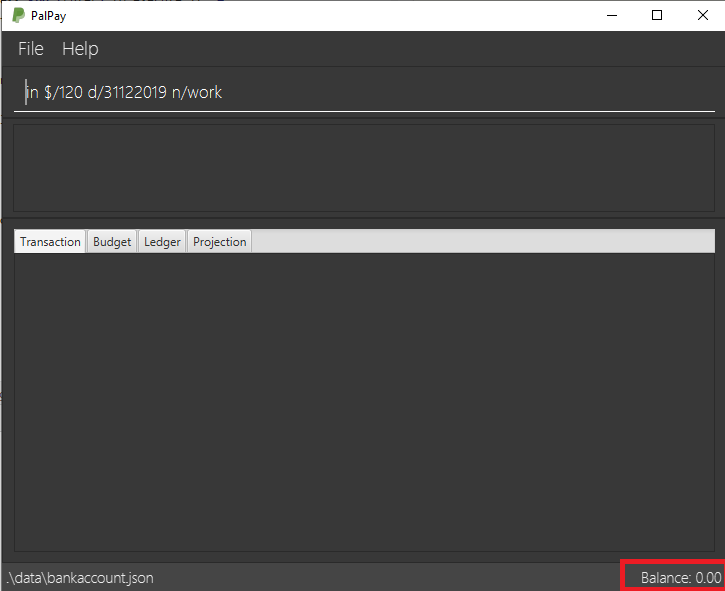Figure 2. Income Logging Example 1
-
-
Income added
-
The income is added to the empty Transactions tab.
-
The added income is given a
GENERALcategory. -
Balance has increased from $0 to $120 (red box in Figure 2).
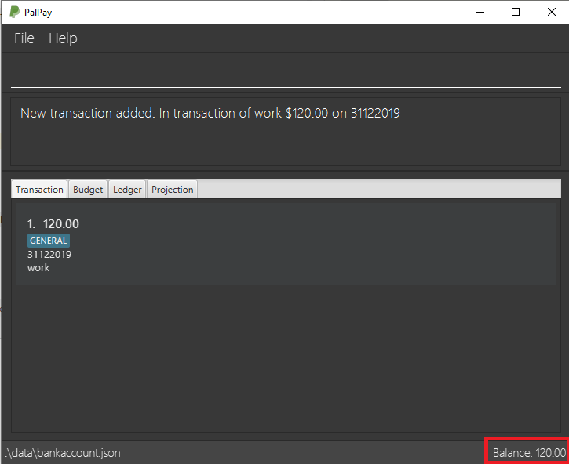Figure 3. Sample Income 1 Added
-
Example 2
in $/500.50 n/allowance d/01012020 c/parents
-
Logging income
-
Inputs an income of $500.50 with description set to 'allowance' and date set on 01/01/2020.
-
The income includes
parentsunder theCATEGORYfield. -
Initial balance (red box in Figure 3) has a value of $120.
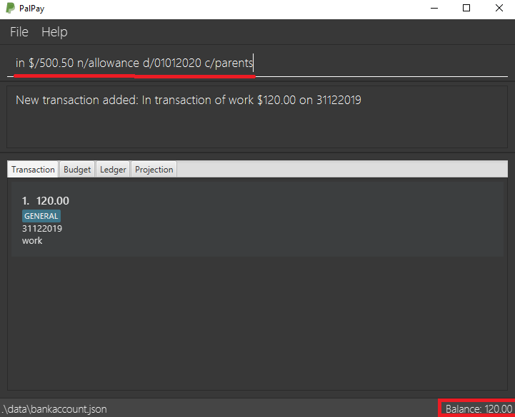Figure 4. Income Logging Example 2
-
-
Income added
-
The income is added to the bottom of the Transactions tab.
-
The added income tagged under
parentscategory. -
Balance has increased from $120 to $620.50 (red box in Figure 4).
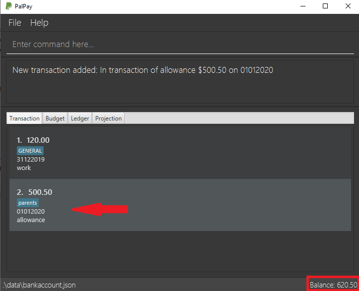Figure 5. Sample Income 2 Added
-
Example Commands:
-
in $/100 d/01012019 n/errand c/work c/company -
in $/250.50 d/29022020 n/mom c/family -
in $/120 d/31122019 n/helping friend
4.2. Logging Expense : out
Have you recently made an expenditure that requires logging down? PalPay accepts all expenditure inputs through the out command. Inputting an out command will decrease the overall balance value. Your expenditure statements, just like the income statements, have the added option to be tagged under one or more categories. You can do so by including the [c/CATEGORY] parameter in your command line. All uncategorized incomes will be tagged under the GENERAL category.
4.2.1. Command Syntax
Format: out $/AMOUNT n/DESCRIPTION d/DATE [c/CATEGORY]…
4.2.2. Important Details:
-
Note that
outtransactions differ fromintransactions in the display amount. Theintransactions are characterized by the positive value within their display box whilst theouttransactions are characterized by the negative values in their display box. The difference can be observed in the example usage below. -
An
outTransaction will affect the remaining amount ofBudgetentries with similar categories within the same time period (Refer to Section 4.2.3.3, “Example 3”).
4.2.3. Example Usage
Example 1
out $/5 d/01012020 n/burger
-
Expenditure logging
-
Inputs an expenditure of $5 with description set to 'burger' and date set on 01/01/2020.
-
The expenditure has not utilized the optional
CATEGORYfield. -
Initial balance (red box in Figure 5) has a value of $620.50.
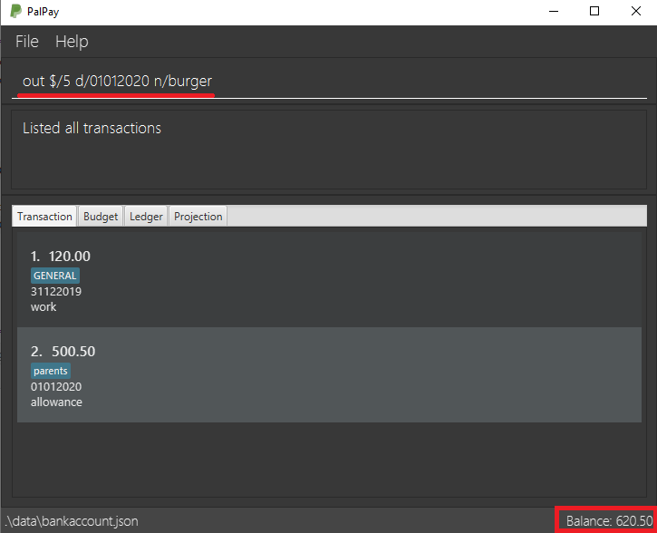Figure 6. Expenditure Logging Example 1
-
-
Expenditure added
-
The expenditure is added to the bottom of the Transactions tab.
-
The amount value of the expenditure box should display a negative value (see Figure 6 entry 3).
-
The added expenditure is given a
GENERALcategory. -
Balance has decreased from $620.50 to $615.50 (red box in Figure 6).
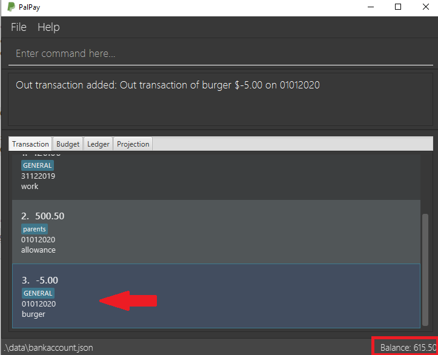Figure 7. Sample Expenditure 1 Added
-
Example 2
out $/1000 n/maintenance d/02012020 c/car c/transport
-
Expenditure logging
-
Inputs an expenditure of $1000 with description set to 'maintenance' and date set on 02/01/2020.
-
The income includes
carandtransportunder theCATEGORYfield. -
Initial balance (red box in Figure 7) has a value of $615.50.
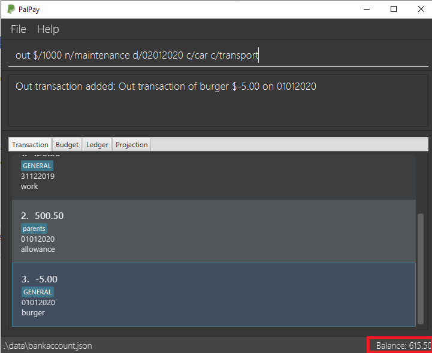Figure 8. Expenditure Logging Example 2
-
-
Expenditure added
-
The expenditure is added to the bottom of the Transactions tab.
-
The added expenditure is tagged under
carandtransportcategory. -
Balance has decreased from $615.50 to -$384.50 (red box in Figure 8).
-
The negative value of the balance indicates that the total spending amount outweighs the total savings amount.
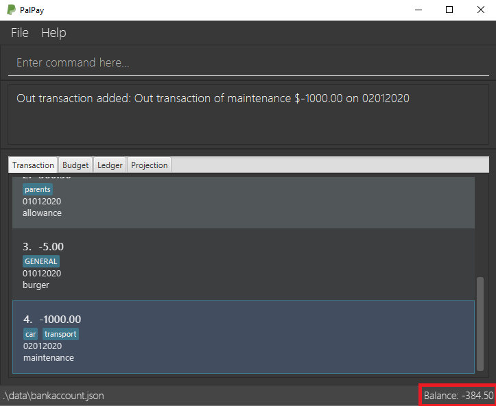Figure 9. Sample Expenditure 2 Added
-
Example 3
out $/100 n/pants d/02012020 c/clothes
-
Expenditure logging
-
Inputs an expenditure of $100 with description set to 'pants' and date set on 02/01/2020.
-
The income includes
clothesunder theCATEGORYfield.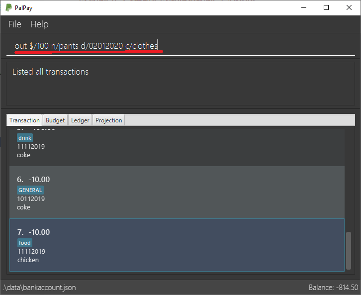Figure 10. Expenditure Logging Example 3
-
-
Budget with similar categories and time period.
-
Entry 3 of the
Budgettab hasclothesunder itsCATEGORYfield. -
Entry 3 of the
Budgettab has a deadline set to01/01/2021.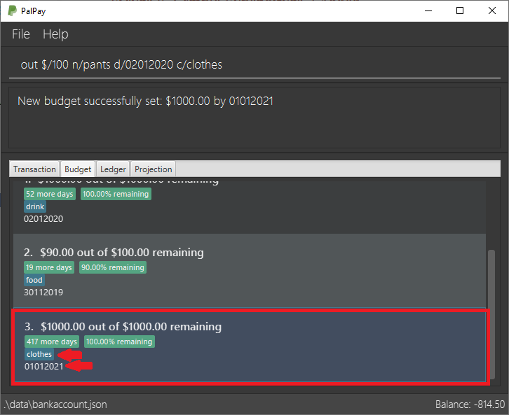Figure 11. Budget with 'clothes' category
-
-
Expenditure added
-
The expenditure is added to the bottom of the Transactions tab.
-
The added expenditure has a date set to
02/01/2020. -
The added expenditure is tagged under the
clothescategory.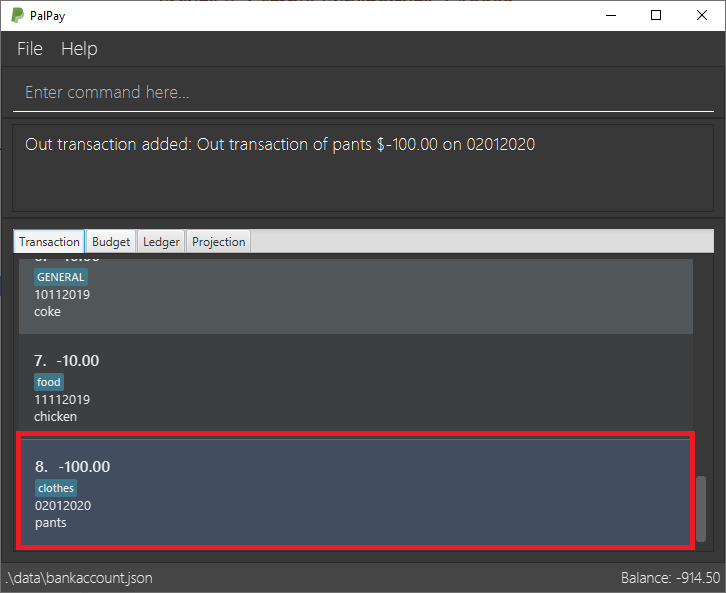Figure 12. Sample Expenditure 3 Added
-
-
Budget entry updated
-
Remaining amount of entry 3 of the
Budgettab has decreased from $1000 to $900.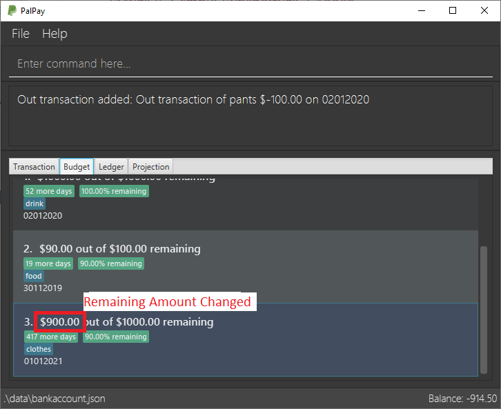Figure 13. Budget entry updated
-
Example Commands:
-
out $/100 d/01012019 n/milk c/food c/drinks -
out $/29 d/29022020 n/taxi c/transport -
out $/12 d/31122019 n/burger
4.3. Setting a Budget : set
You can set a budget for a particular category until a certain date, given it is not already present in the budget list.
A duplicate budget is a budget with the same AMOUNT and DATE and CATEGORY.
If you attempt to do so, you will receive an error message: This budget already exists.
Format: set $/AMOUNT d/DATE [c/CATEGORY]…
Let’s say you want to restrict your spending for a certain category until a certain deadline.
PalPay allows you to set a budget and serve as a reminder to show how much of the budget set you have left
until the deadline (inclusive). You will be more self-conscious of your spending and minimise your spending by setting a budget.
To set a new budget:
1. Type set and enter the relevant details (amount, deadline, category) in the format given above.
2. The result box will display the message New budget successfully set.
3. If the budget already exists in the budget list, the result box will display the message This budget already exists.
4. Now you can see the newly set budget in the budget list.
As you make an OutTransaction of a particular CATEGORY, your budgets with the same CATEGORY will be adjusted
to display the remaining amount of budget. Other budgets in the list belonging to different CATEGORY will not be adjusted.
For example, you went out with your friends and bought a cup of Gong Cha. Before you log your spending, your budget list looks like this:
You then type in the command out $/5 c/BBT c/friends n/gong cha d/11112019.
Your budget list now shows the updated budgets. Observe how Budget 3 is not affected because it does not belong to the relevant category.
Budget will not take into consideration past OutTransaction when calculating the remaining budget. Remember, you are setting a budget
from TODAY till the stated DATE (inclusive)!
If you overspend beyond a set budget, the overspent budget will be displayed in red. Shown below as budget index 3 is an example of an overspent budget:
As the day you have set for the budget approaches, the countdown placeholder as well as the percentage remaining placeholder will turn to red when the number of remaining days reaches 3 and below. Shown below as budget index 4 is an example of a budget approaching its deadline:
Examples:
-
set $/100 d/010120120 c/BBT -
set $/300 d/29022020 c/shopping
4.4. Splitting a Bill with Friends : split
Split a bill with your friends
Format: split $/AMOUNT n/NAME1 a/DESCRIPTION [d/DATE] [n/NAME2]… [s/SHARE]…
-
DESCRIPTIONencompasses more details for the bill being split. User can make use of this field to determine nature of bill. -
[SHARE]defines portion of bill to be paid by each person-
if no shares are given,
amountwill be split evenly across all people, including user -
user is included in the bill if number of shares is 1 more than number of people
-
user’s share will be the first listed share
-
-
each person’s share is assigned in order
-
i.e. last person’s share is the last share listed
-
-
shares cannot be negative numbers
-
shares can be 0 but result is not guaranteed to be meaningful
-
Ledger GUI
This is how the Ledger looks when you switch to the Ledger tab.
The left shows the people who has unresolved balances with you, while the right lists
all transactions that have to do with the Ledger.
Ledger's balance is separate from the BankAccount. It is displayed in the same position,
at the bottom right corner.
4.4.2. Example Usage:
-
split $/1000 n/Amy n/Betty n/Catherine n/Dan a/haidilao$1000 is split equally between Amy, Betty, Catherine, Dan and the user.
-
Enter appropriate command into the command line.
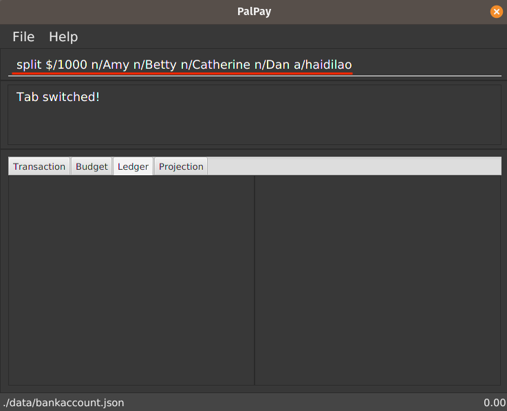Figure 20. Splitting evenly -
Result is displayed accordingly
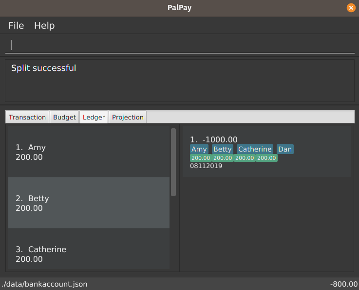Figure 21. Splitting evenly (result)For an even split of $1000, each person pays $200. Therefore Ledger shows $200 on the tab of each person. Ledger balance does not include the amount spent by the user. In this bill, the user is owed $800 in total from the rest of his friends. Therefore Ledger balance is -$800, as shown in the bottom right.
-
-
split $/100 n/Albert n/Bernard n/Clement s/2 s/1 s/7 a/kbbq dinner$100 is split with Albert owing $20, Bernard owing $10 and Clement owing $70.
-
Enter appropriate command into the command line.
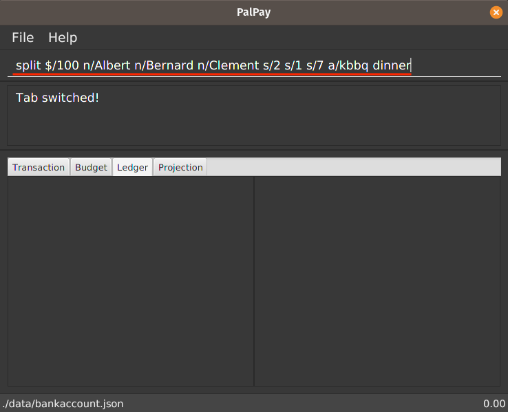Figure 22. Splitting unevenly -
Result is displayed accordingly
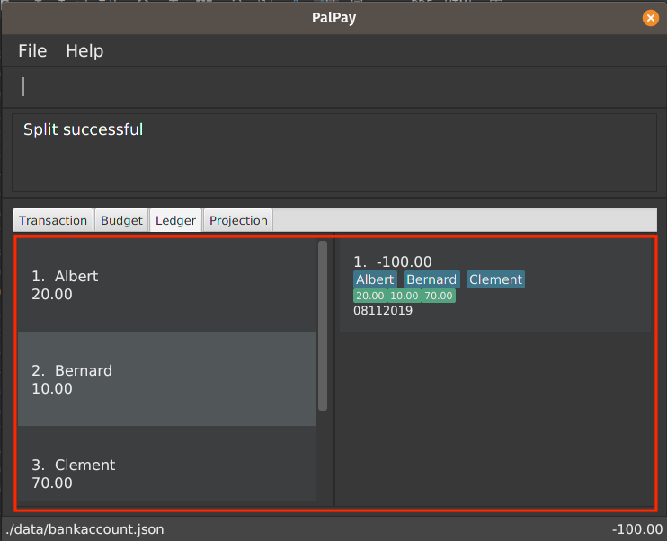Figure 23. Uneven split results
-
4.5. Receiving Money from a Friend : receive
Receives money from 1 friend
Format: receive $/AMOUNT n/NAME1 [d/DATE] [a/DESCRIPTION]
4.5.1. Example usage:
-
receive $/20 n/AlbertTransfers $20 from Albert to user. If Albert is no longer owe or is owed money, he will be removed from the Ledger.
-
Enter appropriate command into the command line.
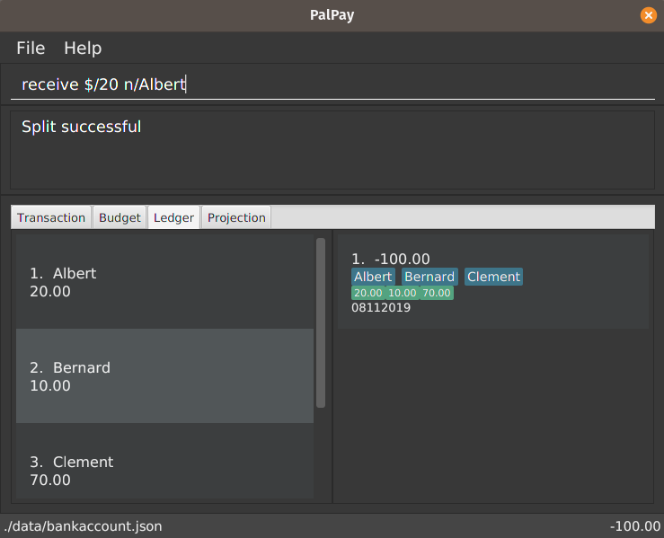Figure 24. Receive payment -
Result is displayed accordingly.
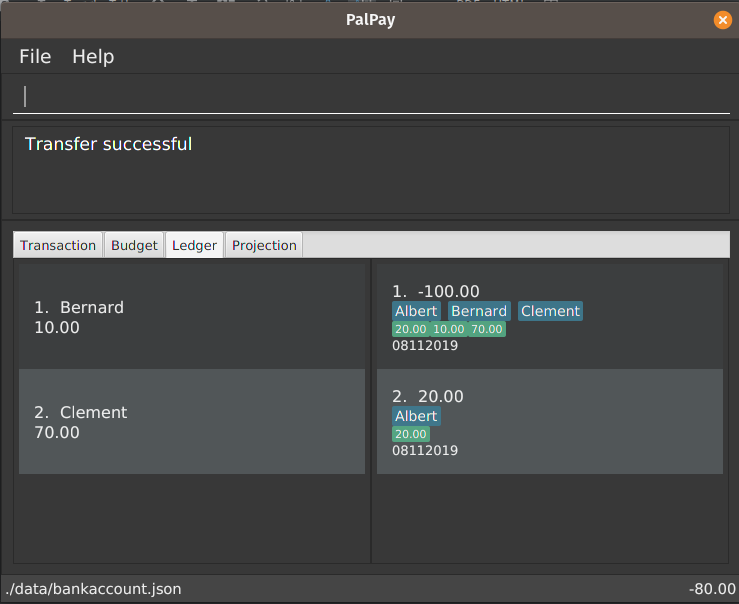Figure 25. Receive payment resultAlbert is removed from the Ledger since he no longer owes any money. Ledger balance is also updated accordingly.
-
4.6. Projecting Future Balance and Budgets : project
Cast a projection on your future balance amount and budget statuses based on your transaction history.
Format: project d/DATE [c/CATEGORY]
|
Note
|
If a CATEGORY is not specified, it will be set as GENERAL by default. GENERAL projections project
upon ALL transactions, regardless of their categories.
|
4.6.1. Example Usage:
-
project d/22072020Projected balance: $955.80
-
project d/01012020 c/FoodProjected balance: $188.04 You are on track to meeting your budget of $600 by 08122019, with a surplus of $484.32!
4.6.2. Usage Constraints
Command Format
-
CATEGORYmust be preceded by its tagc/. A violation of any of the above will produce the following error message:
Date Values
-
DATEinput must be set in the future. A violation of this constraint will produce the following error message:
-
DATEcannot be more than 720 days from the day of projection.
A violation of this constraint will produce the following error message:
Minimum Number of Transactions
-
There must be a minimum of 5 transactions in total, or in the specified
CATEGORYfor a projection to be successfully cast. Should the requirement above be unmet, the following error message will be produced:
-
Should the number of transactions in a
projectionfall below 5, it will be automatically deleted, as shown below:-
Suppose there are 5 transactions, and a
GENERALprojection, which projects upon them.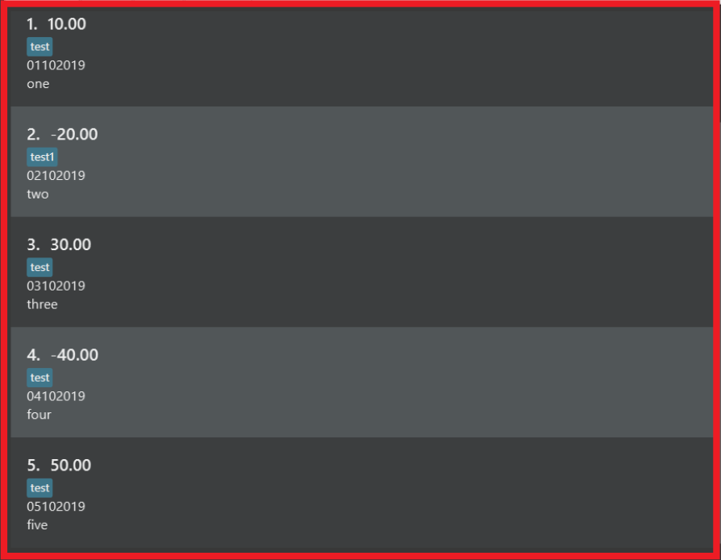Figure 26. Five transactions under the projection tab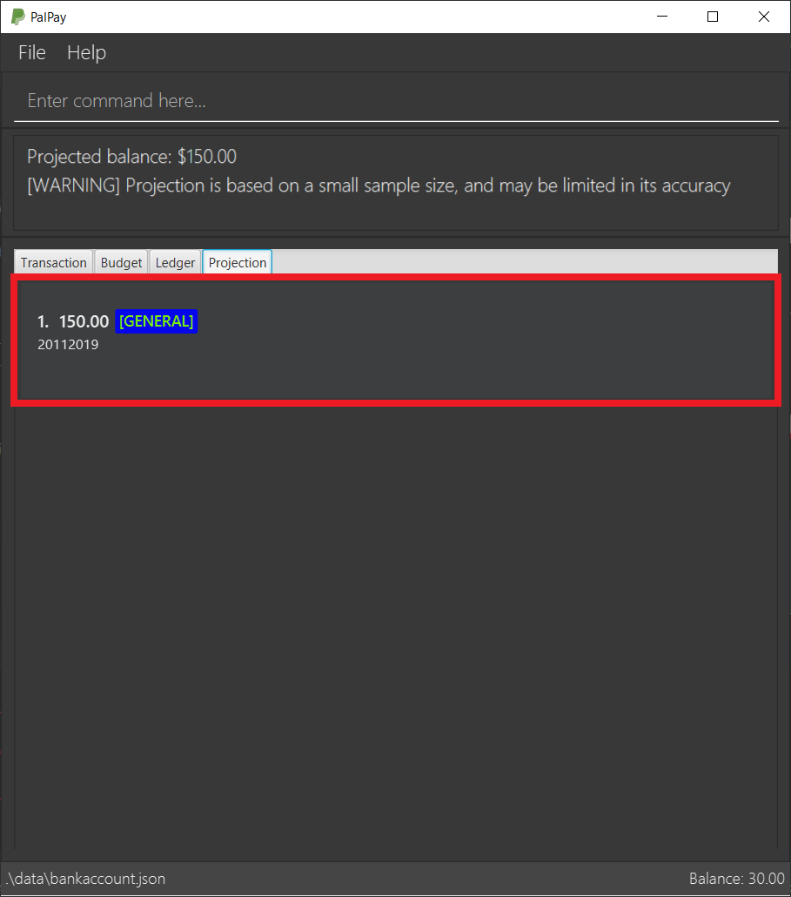Figure 27. A projection which is cast based on the 5 transactions above -
If a transaction being deleted causes the number of transactions being projected upon to fall below 5, the corresponding projection will automatically be deleted.
 Figure 28. The fifth transaction has been deleted.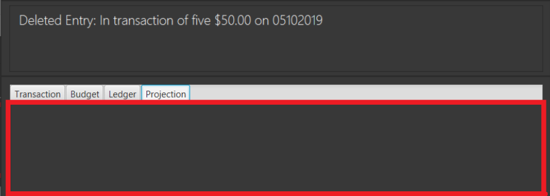Figure 29. The project earlier seen in Figure 19 has been automatically deleted.
Figure 28. The fifth transaction has been deleted.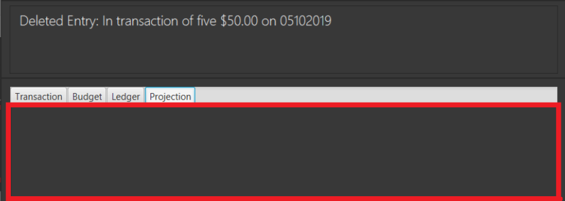Figure 29. The project earlier seen in Figure 19 has been automatically deleted.
-
Valid Budget Start Dates and Deadlines
A projection will only project upon budgets with deadlines set before or equal to the projection DATE. An example
is depicted below:
-
Suppose there is currently a general
BUDGETwith a deadline set for 28th November 2019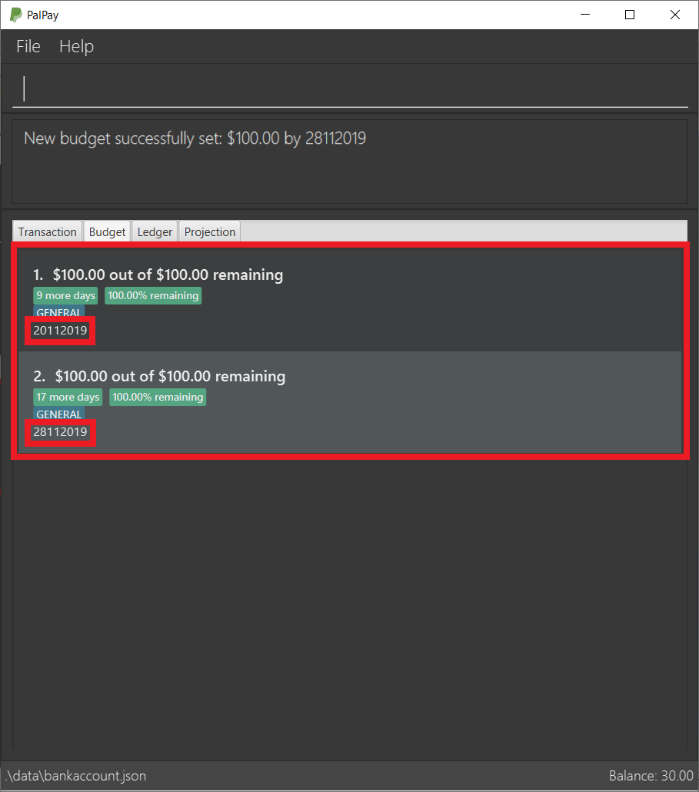Figure 30. Two budgets with dates 20112019 and 28112019 in the "GENERAL" category -
If a general
PROJECTIONis cast to 20th November 2019, it will contain the budget with deadline 20112019 but not 28112019, since the projection’sDATEis earlier than 28112019. Figure 31. The projection only contains the budget with deadline 20112019
Figure 31. The projection only contains the budget with deadline 20112019
Backward Projections
While it is possible in PalPay, projecting your balance amount backwards in time is not guaranteed to produce sensible results. It is generally not advisable to do so.
4.7. Display a Projection Graph: display
Display a graphical representation of a projection in a new window.
Format: display PROJECTION_ID
4.7.1. Example Usage
-
Type display PROJECTION_ID into the command box and press Enter.
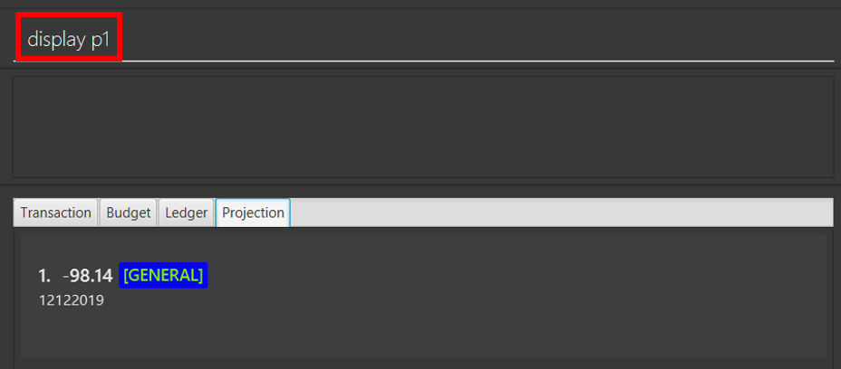 -
A new window containing a graphical representation of the specified projection will pop up.
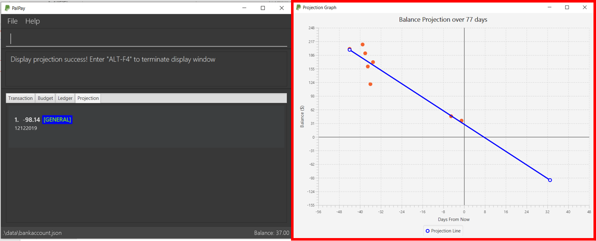If there are any budgets associated with the projection, a corresponding graphical representation of the budget will be additionally displayed.
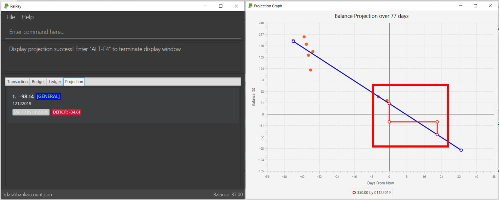
4.7.2. Interpreting the Projection graph
Here is a typical projection graph.
-
The X-Axis
The X-Axis denotes your balance in dollars ($). -
The Y-Axis
The Y-Axis denotes the number of days from now, with today being Y = 0. -
Red Points
The red points on the graph each represent your account balance (denoted by the X-value) at a particular point of time (denoted by the Y-value). -
Blue Line Graph
The blue line graph represents the projection line, with each point along it representing a prediction of your account balance (denoted by the X-value) at a certain point of time (denoted by the Y-value). -
All Other Coloured Line Graphs
All other coloured line graphs represent various budgets which fall within theCATEGORYandDATErange of thePROJECTION. Each of these line graphs have three parts:
4.7.3. Usage Constraints
Valid Projection Index
-
A
ProjectionwithPROJECTION_IDmust exist. Attempting to display a non-existentPROJECTIONwill result in the following error message:
Static Graph Rendering
-
Projectiongraphs do not update automatically when a newTransactionorBudgetis added or removed. Instead, they are statically rendered upon thedisplaycommand.NoteDue to the static nature of projection graphs, commands should NOT be executed while a projection graph is open, lest the behaviour of PalPay become unpredictable.
Consequently, adisplaycommand should ALWAYS be followed by closing the projection graph window, before any other actions are performed within PalPay.
4.8. Switching Tabs : view
Want to switch tabs without using your mouse? You can switch to another tab with the view command.
4.8.1. Command Syntax
Format: view TAB
4.8.2. Example Usage:
You do not have to use your mouse in PalPay to switch tabs anymore.
-
By default, you are in the
transactiontab.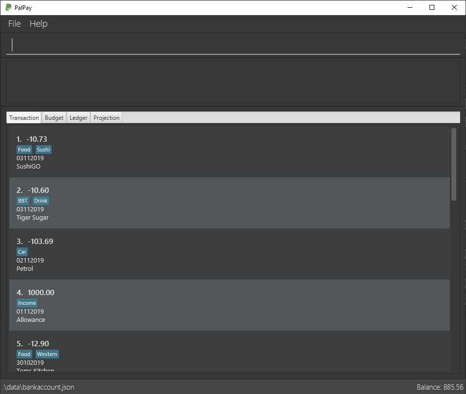 -
Simply type view budget in the command box and press Enter.
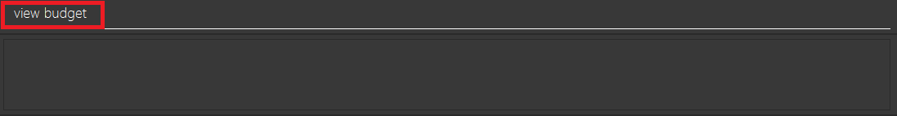 -
You can now view your budgets. Easy!
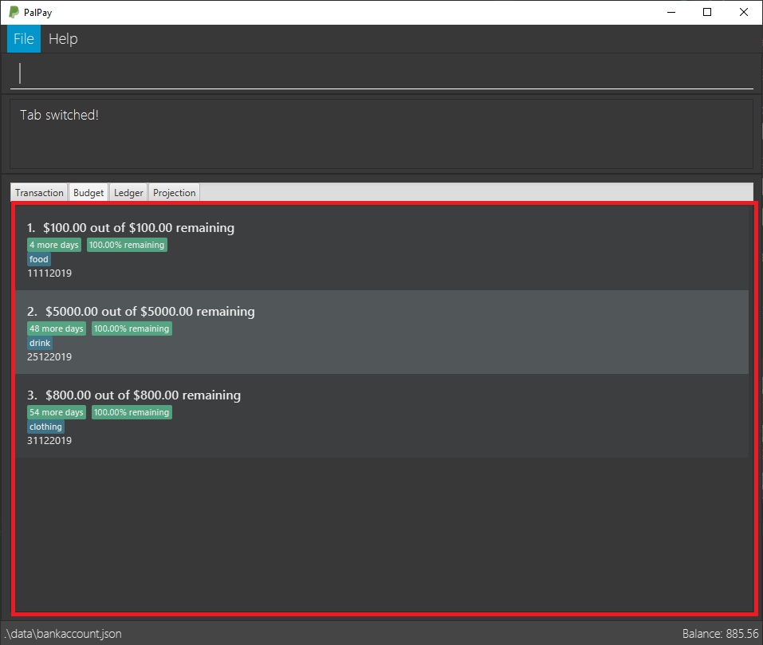
4.9. Deleting Finance : delete
Deletes the specified Transaction, Budget, Ledger or Projection from PalPay.
4.9.1. Command Syntax
Format: delete TYPE+INDEX
4.9.2. Important Details:
-
PalPay deletes items based on the entry index of the target item. You can only delete a maximum of 1 entry per command. (i.e.
delete t1 t2 b1ordelete t1 t2will not work) -
You can only delete an existing transaction or budget. Nothing will be deleted if the transaction or budget of
INDEXdoes not exists.
4.9.3. Example Usage:
Deleting the 5th entry of the transactions list
-
Note the index of the entry you want to delete. In this example, entry 5 is the field we will be deleting.
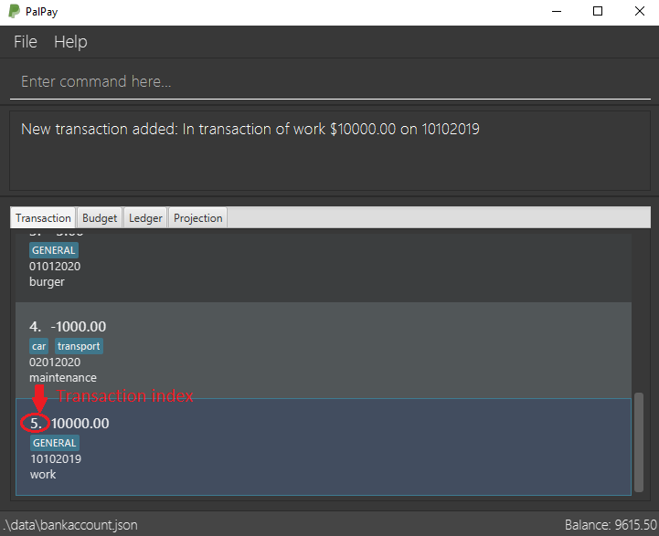 -
Since we are deleting a Transaction entry of index 5, we will input
tinto ourTYPEfield and5into ourINDEXfield.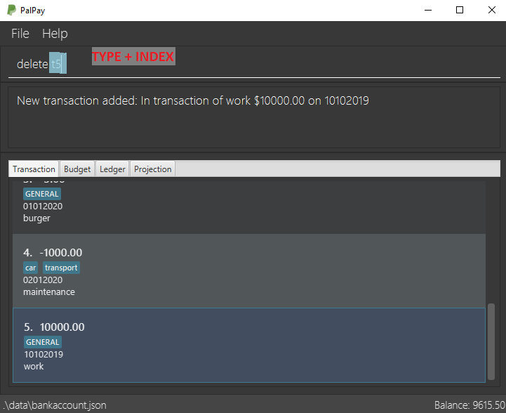 -
Success message will be displayed upon successful deletion.
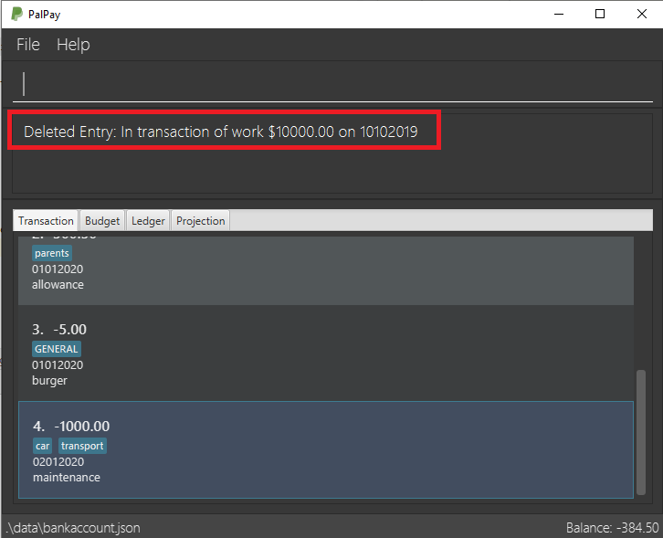
Example Commands:
-
delete t1 -
delete b3 -
delete l2 -
delete p4
4.10. Updating Finance : update
Did you make a mistake in one of your entries? Perhaps you over counted that expenditure you made. PalPay provides you with an update feature which helps you change specific fields within your entries.
4.10.1. Command Syntax
The update feature has different implementations for different entry types. The conditions for the update feature is as follows.
Format (Transactions): update TYPE+INDEX [$/AMOUNT] [d/DATE] [n/ITEM] [c/CATEGORY]…
Format (Budget): update TYPE+INDEX [$/AMOUNT] [d/DATE] [c/CATEGORY]…
Format (Ledger): Cannot be updated
Format (Projections): Cannot be updated
4.10.2. Important Details:
-
updaterequires at least one field to be updated. (e.g.update t1 $/20 d/10102019 n/milkandupdate t1 $/10will both be accepted). -
You can only update an existing transaction, budget or projection. Nothing will be updated if the entry of index
INDEXdoes not exists. -
LedgerandProjectiondo not have an update function. If you need to change specific fields within a ledger or projection entry, you should delete the target entry and recreate a new entry with your desired fields. -
You cannot change an
inTransaction to anoutTransaction or vice versa. -
Changing an expenditure’s (
outTransaction) category field to that of a Budget’s entry will reflect changes on that particular Budget entry as well. (Further explained in Section 4.10.3.3, “Example 3:”)NoteChanging the categories of an outTransaction entry with similar categories to that of aBudgetentry to reflect changes on the budget’s remaining amount will be incoming in version 2.0.
4.10.3. Example Usage
Example 1:
Updating a Transaction entry.
-
Identify the index number of the entry you want to edit. In this case, we will be using entry 3.
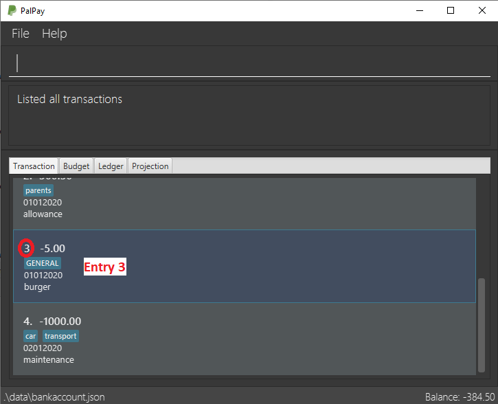 -
Put
tas yourTYPEinput and key in the fields you want to change. In this case, we will only be changing the amount of the transaction.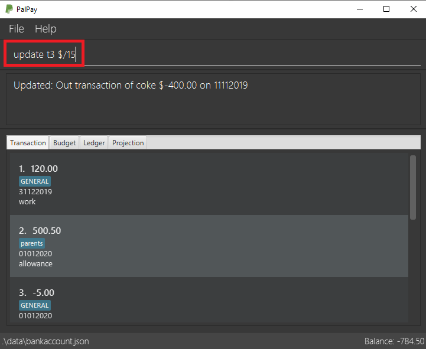 -
Success message will be displayed upon successful update. Fields will now be updated accordingly.
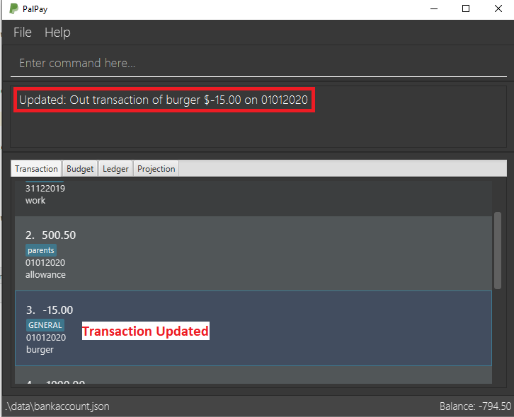
Example 2:
Updating a Budget entry.
-
Identify the index number of the entry you want to edit
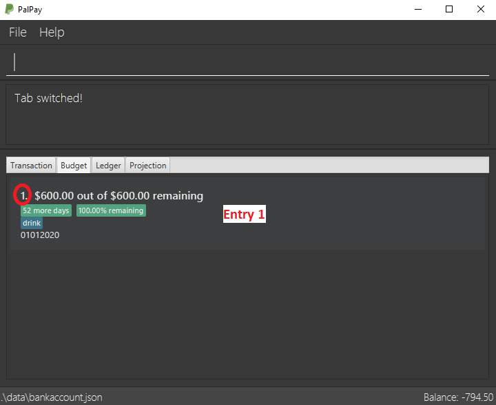 -
Put
bas yourTYPEinput and key in the fields you want to change. In this case, we will be changing both the date and amount of this Budget. When you update the amount of a budget, the budget will be re-initialised (reset to 100%).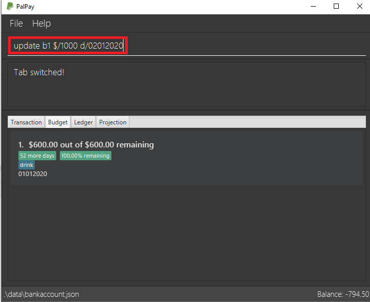 -
Success message will be displayed upon successful update. Fields will now be updated accordingly.
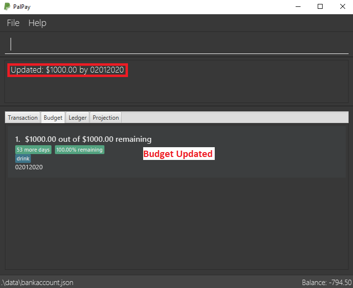
Example 3:
Updating a Transaction entry which has the same category field as a Budget entry.
-
Identify the index number of the Transaction entry you want to edit.
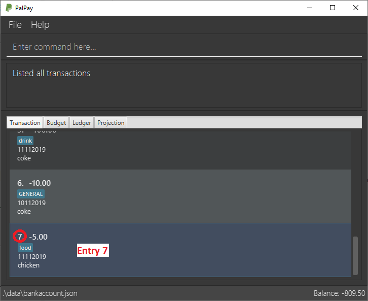 -
Notice that a Budget entry has the same category field as the Transaction entry mentioned above. (Budget entry 2).
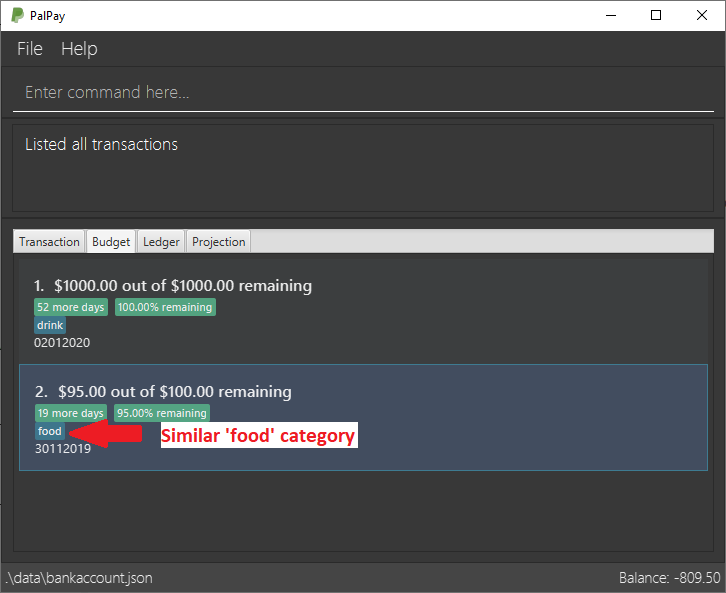 -
Put
tas yourTYPEinput and key in the fields you want to change. In this case, we will be changing only the amount of this Transaction.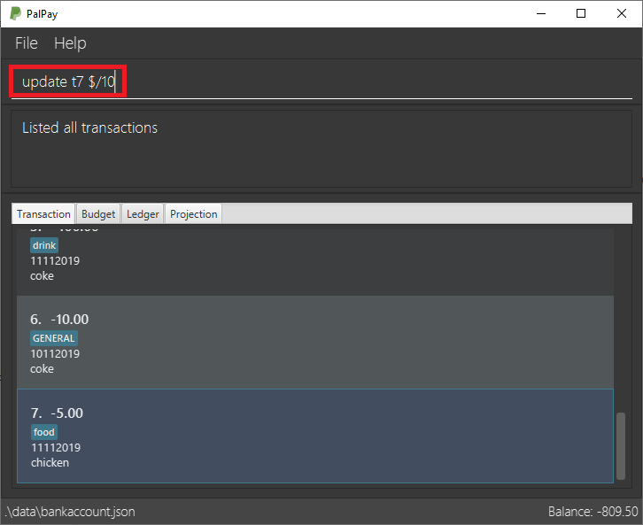 -
Success message will be displayed upon successful update. Fields of the Transaction entry will now be updated accordingly.
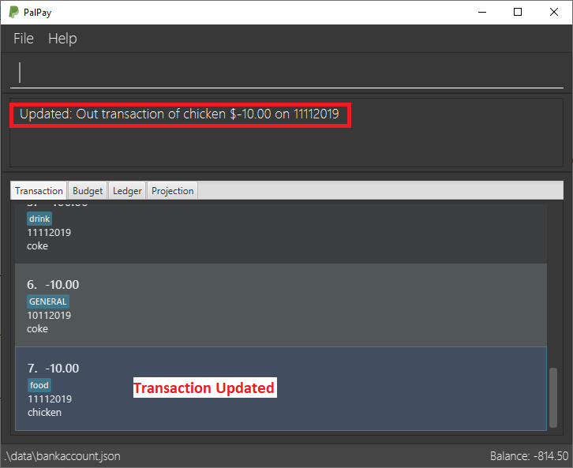 -
Remaining amount of the Budget entry will also be updated accordingly.
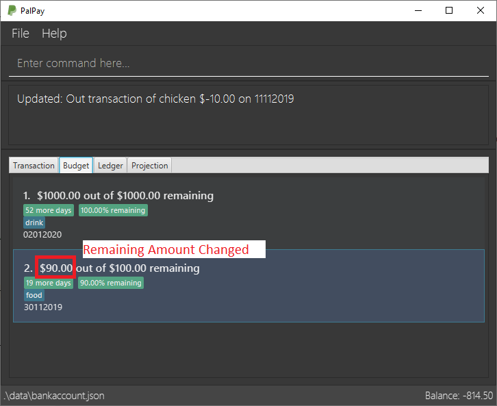
Example Commands:
-
update t1 $/20 n/coke c/drinks d/12122019 -
update b2 $/300 -
update t4 $/30 d/12102019
4.11. Sorting Transactions : sort
Have you ever wonder which is the most expensive transaction you ever made?
Or which is the latest transaction you made? Fret not!
You can now sort your transactions according to date or amount.
4.11.1. Command Syntax
Format: sort PREDICATE/ORDER
4.11.2. Example Usage:
Do you want to know what is the latest transaction you made? No need to scroll all the way down anymore. PalPay has made it simple for you.
-
By default, your transactions are sorted from the earliest transaction you entered to the latest transaction you entered.

-
Simply type sort date/d in the command box and press Enter.

-
Great! You can now see the latest transactions you made.
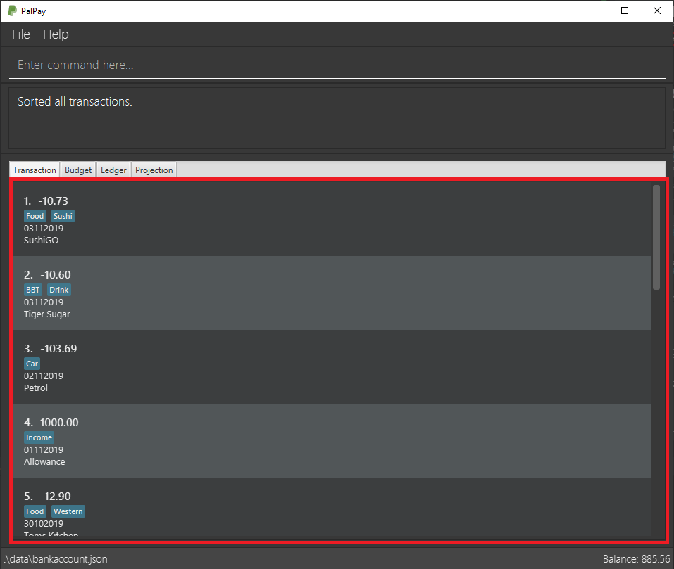
4.12. Filtering Transactions : filter
Here at PalPay, you do not need to scroll through your history of transactions to find out what you spend two months ago.
PalPay gives you the power to filter your transactions to solve that problem.
4.12.1. Command Syntax
Format: filter [n/DESCRIPTION] [y/YEAR] [m/MONTH] [c/CATEGORY]…
4.12.2. Example Usage:
Imagine that you wanted to find out what you spent on shopping in October 2019.
-
By default, PalPay shows your all your transactions you have made.
-
Simply type filter c/Shopping m/10 y/2019 in the command box and press Enter.
-
You will now see the list of transactions you have made while shopping in October 2019. Hurray!
4.13. Undoing the Last Command : undo
Did you accidentally delete a transaction? Do not panic! PalPay lets you undo your previous commands with just one
word, undo.
4.13.1. Command Syntax
Format: undo
4.13.2. Example Usage:
Suppose you want to update your allowance you received in October 2019 to $800 but you accidentally update the GrabTaxi
ride instead. Without going through the trouble of updating the same transaction again, you can simply perform the
undo command. Just follow these three simple steps.
-
Here, you can see the wrong update you just made.
-
Simply type undo in the command box and press Enter.
-
As you wish, your command has been undone.
4.14. Redoing the Last Command : redo
Made an extra undo by mistake? Do not worry! PalPay lets you redo your previous undo(s) with just one word, redo.
4.14.1. Command Syntax
Format: redo
4.14.2. Example Usage:
Suppose you want to undo your last update but you accidentally undo twice instead.
You can simply perform the redo command to revert the changes. Just follow these three simple steps.
-
Here, you can see the extra undo you just made and the GrabTaxi ride is back at $800.
-
Simply type redo in the command box and press Enter.
-
Great! Your transaction is back to normal.
4.15. Clearing All Entries : clear
Do you want to start PalPay from a clean slate again? The clear command lets you do that!
4.15.1. Command Syntax
Format: clear
4.16. Listing All Entries : list
After filtering your transactions, you can use the list command to see all of your transactions in PalPay again.
4.16.1. Command Syntax
Format: list
4.17. Viewing Help : help
Did you forget how to use the in command? Fret not! You can easily find the link to this User Guide with the
help command. Simply copy and paste the URL into your browser to access our User Guide.
4.17.1. Command Syntax
Format: help
4.18. Exiting the Application : exit
Finishing using PalPay for the day? You can use the exit command to close PalPay.
4.18.1. Command Syntax
Format: exit
4.19. Saving the Data
PalPay data is saved in the hard disk automatically after any command that changes the data.
There is no need to save manually.
5. FAQ
Q: How do I transfer my data to another Computer?
A: Install the app in the other computer and overwrite the empty data file it creates with the file that contains the data of your previous Bank Account folder.
6. Command Summary
-
In :
in $/AMOUNT n/ITEM d/DATE [c/CATEGORY]
Example:in $/100 n/allowance d/11112019 c/income -
Out :
out $/AMOUNT n/ITEM d/DATE [c/CATEGORY]
Example:out $/20 n/coke d/19112019 c/drink c/lunch -
Set :
set $/AMOUNT d/DATE [c/CATEGORY]…
Example:set $/100 d/10102019 c/food -
Split :
split $/AMOUNT n/NAME1 a/DESCRIPTION [d/DATE] [n/NAME2]… [s/SHARE]…
Example:split $/1000 n/Amy n/Betty n/Catherine n/Dan a/HaiDiLao -
Receive :
receive $/AMOUNT n/NAME
Example:receive $/20 n/Albert -
Project :
project DURATION
Example:project d/22072020 -
View :
view TAB
Example:view transaction -
Delete :
delete TYPE+INDEX
Example:delete t1 -
Update :
update TYPE+INDEX [$/AMOUNT] [d/date] [n/ITEM] [c/CATEGORY]
Example:update b1 $/100 c/transport -
Sort :
sort PREDICATE
Example:sort amount -
Filter :
filter [n/DESCRIPTION] [y/YEAR] [m/MONTH] [c/CATEGORY]…
Example:filter c/transport c/allowance y/2019 -
Undo :
undo -
Redo :
redo -
Clear :
clear -
List :
list -
Help :
help -
Exit :
exit